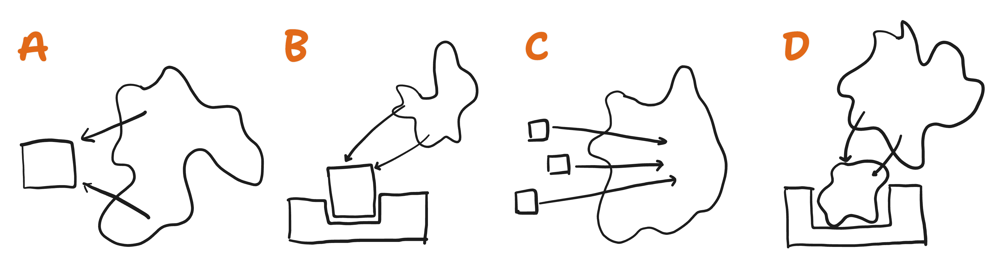
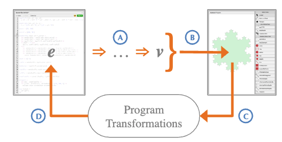
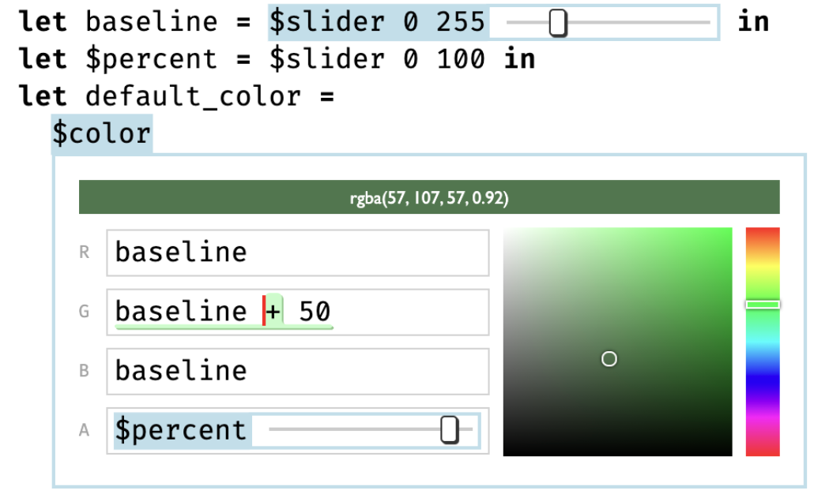
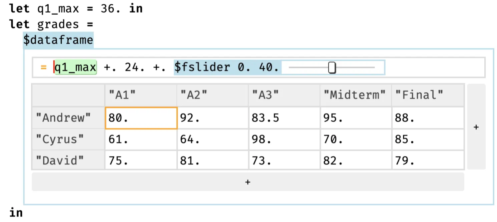
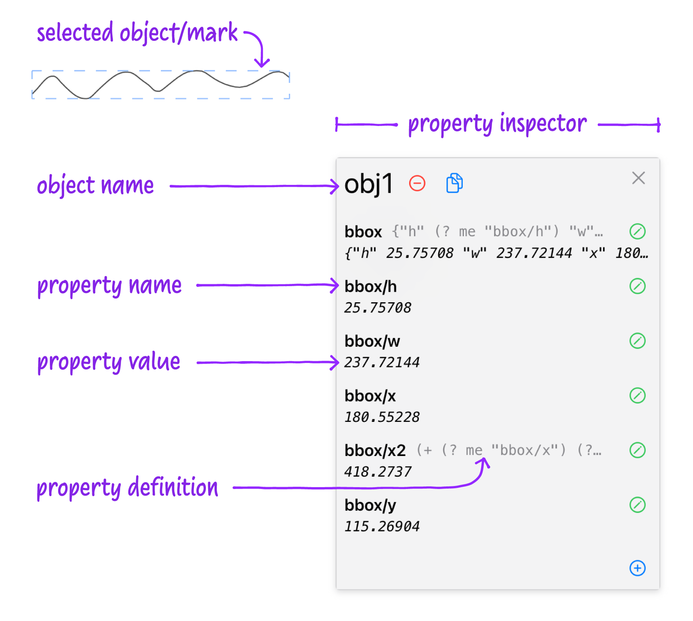
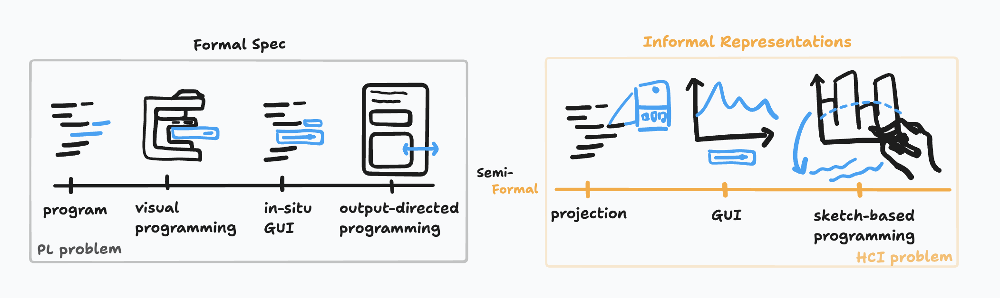
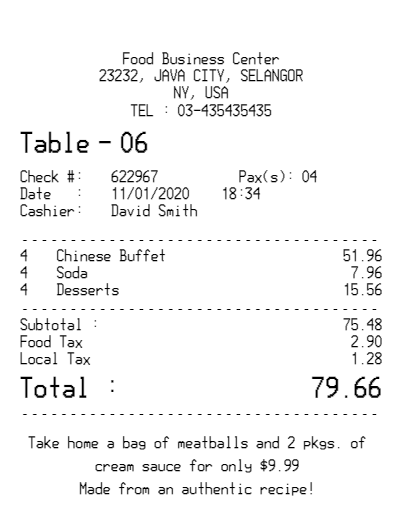
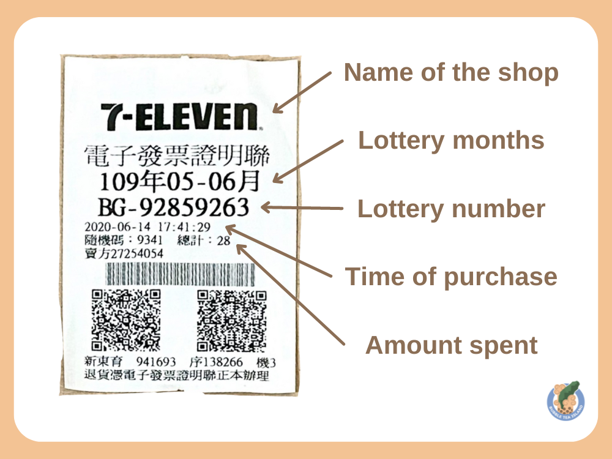

Something In Between Formal Spec and Informal Representation
ACM CHI Workshop on Tools for Thought, 2025

Ryan Yen
MIT CSAIL

Josh Pollock
MIT CSAIL

Caroline Berger
Aarhus University

Arvind Satyanarayan
MIT CSAIL
Programming is beautiful in its formalisms. Typed variables, function signatures, and compile-time checks create a world of certainty, where logic flows predictably, and errors are caught before they ever touch runtime.
But the paradox is that programming is never just writing code. Before code takes shape, there’s a messy process of thinking, exploring, and designing, which often happening outside the text editor 12. We sketch ideas on whiteboards, draft flowcharts, browse GitHub issues, and watch YouTube tutorials. We rely on informal representations, which is imperfect, partial, and transient, to figure things out. This interplay between formal code and informal representations becomes especially stark in exploratory workflows, like exploratory programming or exploratory data analysis, where questions evolve as fast as answers. Yet, existing tools often treat these two worlds as separate: you can either formalize informal representations (through rigid transformations) or embed informal artifacts into code; but only in predefined and limited ways.
What if our tools didn’t force this split between formal and informal? What if they embraced the gray area between thought and code—a semi-formal paradigm.
One way to describe what we are visioning is an alternative path to the semi-formal paradigm, a middle ground that blends the rigor of code with the flexibility of evolving representations. Think of a computational notebook where LaTeX equations, code snippets, sketches, and visualizations coexist, interconnected, but not locked into formality until there’re being used.
Prior Attempts
Researchers have explored multiple pathways to navigate the space between informal representations and formal code, each reflecting different philosophies on how to blend fluid thinking with computational precision. Broadly, these approaches fall into three strategies:
- Bringing Informal to Formal Figure 1A: This approach focuses on translating informal representations—like GUI, visualization, or examples—into formal specifications. Program synthesis often plays a central role here, where the system infers code from partial inputs or high-level intents. Tools use programming-by-demonstration fall into this category.
- Preserving “Holes” for Informal Figure 1B: Rather than immediately translating informal ideas into formal code, this strategy embraces partial specification. Extended type systems, gradual typing, or live programming environments often use this approach, allowing code to run even when parts are missing or undefined.
- Patching Formal Specs onto Informal Content Figure 1C: Instead of forcing informal ideas into code or leaving gaps, this approach overlays formal structures onto existing informal content. Think of tools that let you annotate diagrams with logic, embed executable code into markdown documents, or link spreadsheet cells to complex formulas.

Bringing Informal to Formal
Many researchers have attempted to formalize the unstructured representations. Systems like Sketch-n-Sketch (Figure 2) demonstrate how output-directed programming can let users tweak a rendered view to manipulate the underlying code 3. Likewise, programming by example (PBE) captures input-output instances to generate or refine formal code 4.

Yet fully capturing their complete semantics remains almost impossible, even within well-defined domains. While Sketch-n-Sketch allows direct manipulation of graphical elements and reflects those changes in the source code, it often defaults to literal updates—hard-coding values from specific edits rather than abstracting patterns or maintaining parameterization.
Many direct-manipulation approaches impose premature structure, leaving tool developers guessing how users might later utilize these artifacts and often resulting in rigid systems that limit flexibility. On the other hand, if tools specify too little, they fail to capture the semantics users need. These predefined semantics often lack an understanding of domain-specific conventions or broader context, making it difficult to adjust logic based on changing user intent 5. Designers can either commit too early and restrict future possibilities or create tools that remain too vague to be truly useful 6.
Preserving ___ for Informal
Another approach, which I personally find clever, is introducing the concept of a hole into the programming language 7. Hazel introduces typed holes—deliberate “gaps” in the code that allow the program to stay well-formed even when parts are missing. In Hazel, you can write an incomplete expression (a hole) that has a type, and the environment still typechecks and runs the program up to that hole. Building on this, Live Literals (Livelits) extends Hazel by letting certain holes be filled via live GUIs 8. For example, a color-valued hole can be linked to a color picker widget: instead of typing an RGB value, the programmer picks a color visually, and that chosen value is inserted into the code.


Hazel + Livelits is arguably the closest to a semi-formal paradigm. However, it might not fully satisfy a user’s semi-formal vision if that includes starting from something like a hand-drawn sketch or a wireframe UI. As in approach (Figure 1A), these GUIs preserve a set of predefined attributes linked to the code, risking premature commitment if the user’s needs later change.
Patching Formal Spec to Informal Representation
Conversely, we can preserve the hole in the informal representation and patch the formal spec onto it. Projects like Inkbase 9 from Ink & Switch demonstrate how freehand drawings can accumulate tags, constraints, and relationships over time.

In Inkbase, the user starts with a blank canvas or sketches. They might treat a particular pen stroke as a “label” or “value,” then link it to another. For example, they can draw a graph axis and data points, then connect those points to a mathematical relationship. Early on, the drawing is just a drawing. As the user adds formulas or links, it gains behavior—becoming a kind of program. This ”gradual enrichment” avoids upfront commitments. One can start with loose, informal, unstructured content and add more structure, formality, and fidelity over time.
However, without a general-purpose mechanism to infer meaning on the fly, Inkbase demands manual labeling and linking. Also, the computation or program logic “lives” in the patches without fully capturing the informal representation. While it allows users to add custom properties ad hoc, the properties themselves are often predefined, such as width or height, limiting flexibility if the user’s intent goes beyond what the tool developer anticipated.
To Formalize or Not To, That is Not the Question
The three approaches above reflect a broader challenge in bridging informal and formal representations. The core tension isn’t merely about toggling between two states, it’s about how systems reason user intent without falling into the traps of over-constraining or under-specifying. The challenge is nuanced: users often operate in a fluid space where ideas are half-formed, evolving, or ambiguous, yet our tools demand clarity far too early.
Take Inkbase as an example, a powerful demonstration of how representation-centric systems can foster incremental structuring. It thrives on the idea that users can shape meaning over time. But even here, the cracks show: managing unknown or partially known attributes often requires constant manual input. Without richer placeholders or dynamic inference mechanisms (say, from a large language model), the user bears the cognitive load of transitioning informal artifacts into structured data.

Our key assumption of the issue is that we tend to treat formal and informal as opposing ends of a binary. But they’re not. They should have coexisted on a spectrum (Figure 6), acknowledging that we can’t force one to become the other, and be comfortable stay in a semi-formal space.
A Fourth Direction: Embracing the Semi-Formal Land
Building on the three strategies discussed earlier, we propose a fourth path (Figure 1D): one that doesn’t aim to resolve ambiguity immediately but works with it, letting meaning emerge contextually over time. This approach hinges on three principles:
- Gradually Enrich Informal Representations: Instead of hard transitions from sketch to code, informal elements can be incrementally structured. Think of diagrams where relationships become data models over time or freeform notes that evolve into computational graphs.
- Loosen Strictly Typed Programs: Rather than treating types as rigid contracts from the outset, let them flex. Programs can embrace semi-formal constructs—placeholders, fuzzy types, or undefined slots—that gradually solidify as the system gathers more context.
- Reason About Semi-Formal Representations in Context: This is where GenAI can play a transformative role. By dynamically interpreting fuzzy attributes—values that aren’t fully specified—systems can delay hard decisions until they’re necessary. By allowing AI-driven or just-in-time resolution, systems can gracefully handle evolving or uncertain data.
Examples of Semi-Formal Paradigm
Budget Calculation
Consider a trip planning scenario where you have well-defined budget formulas alongside unstructured artifacts like photos. Traditional tools often formalize everything prematurely, defining how to parse a receipt image. But if you travel to a new country with unfamiliar receipt formats, you may end up manually entering details that existing tools can’t parse.


Capture Receipts: You snap photos of each receipt. Initially, these are purely informal images.
Gradually Add Metadata: Later, you or an automated tool tags each photo with attributes such as
date. The images now have partial structure.Reference Dynamic Attributes in Code: In a semi-formal environment, you could write:
let total = 0; @photos_taken.forEach(img => { if (img.metadata.date >= '12-Mar-2020') total += img.total_expense; });Here,
@photos_takenmight already know some metadata (likemetadata.date) but can also defer other attributes (total_expense) until they’re provided.Executing Semi-Formal Code: If a particular
dateis stored as “March 12, 2020,” a strict environment might throw an error. A semi-formal setup defers the resolution until needed, possibly querying an LLM to parse it into'2020-03-12'. Similar deferral applies iftotal_expenseis missing or in a different currency; the program flags only the problematic parts rather than failing entirely.
Another Example: Brand Analysis
Imagine you’re a data analyst at a fashion company who needs to understand how your brand’s pricing and aesthetics compare to competitors. Instead of waiting for perfectly formatted data, you operate in a semi-formal environment that allows you to iterate quickly.
[WEB PAGE] Integrating Live Data via Web Scraping
You gather competitor pricing by pasting a URL into your workspace and tagging it for extraction:
data = @link.product_dataYour environment’s AI tries to parse product names, prices, and ratings from raw HTML. If it finds mismatches (e.g., a different layout or currency), it adjusts accordingly based on your current constraints.
[IMAGE] Extracting Color Palettes from Product Images Next, you want to compare your brand’s prices side by side with competitors’. You reuse an existing color palette from a previously made visualization:
boxplot = plt.boxplot([df_own['price'], df_competitor['price']], patch_artist=True)
for patch, color in zip(boxplot['boxes'], [@image.color_palette[0], @image.color_palette[-1]]):
patch.set_facecolor(color)Now, your pricing analysis is color-coded: @image.color_palette[0] for your brand, and @image.color_palette[-1] for competitors.
[] Crafting Analytical Functions with LaTeX Annotations
To tie together the pricing and aesthetic data, you decide to compute an Aesthetic-Price Score (APS)—a matrix used by the company that reflects how a product’s visual impact relates to its cost. Rather than writing fully formal code, you begin with an informal LaTeX snippet:
You then reuse this LaTeX expression as code:
score = APS(visual_impact=0.8, brand_consistency=1.2, trendiness=0.5, price=50)In this example, we combine informal representations—such as a web page, an image, and a LaTeX formula—and enrich them with attributes while allowing some to remain fuzzy or dynamic, like .products. The exact data format of these dynamic attributes isn’t determined until runtime (in this case, it infers the column name based on df_own). This approach demonstrates how semi-formal representations, like url (informal) combined with .products (formal), can be integrated into formal code syntax.
Oh, and of course, Ryan brand’s APS outperforms the competitor.
Future Direction
Formalizing User Interaction or User Pattern
In a prototype combining Marimo and tldraw made by Jan-Hendrik Müller, you can dynamically change a Matplotlib color via a mouse action. Currently, a developer-coded ReactiveColorPicker() drives this. A future semi-formal system might instead extract these attribute definitions from user behavior, enabling new interactions on the fly. For example, writing @receipt.calculate_sum() could parse a receipt image and sum its total. If it works well, the same logic can be reused with @stock.calculate_sum() or @shopping_cart.calculate_sum(), gradually evolving into a more formal abstraction.
In Adventure Calculus, he discusses ways to capture repeated interaction or logic patterns more formally. Early on, a user might copy-paste similar snippets multiple times. Eventually, they can abstract these snippets into a function, template, or formal spec. This suggests a path where casual repetition naturally evolves into systematic reusability.
The Problem of Iteration (Human–AI Collaboration)
Embedding LLMs or AI models in a semi-formal system creates an iterative workflow:
- Extraction Stage: The AI identifies or parses an informal artifact, such as bounding boxes in an image or snippets of text.
- Transformation Stage: The AI or user refines these outputs into structured code or data, generating a JSON schema, typed fields, or hooking them into existing APIs.
At each step, the system may need clarifications or updated instructions. However, instead of a purely turn-based chat, we can embed constraints directly in the semi-formal spec. For instance:
@link.products(type=pd.DataFrame, columns=['name', 'price'])Here, the AI understands that the output should map to a pandas DataFrame with specific columns. If the user adjusts the source data or tweaks the extraction logic, the AI retains these constraints—allowing refinements without starting from scratch. This minimizes the risk of the AI “overturning” prior work and reduces the back-and-forth common in chat-based interfaces.
Concretizing the Semi-Formal Specification
A semi-formal system doesn’t eliminate typed code—it augments it. Most of the code remains conventional (typed parameters, familiar data structures), but fragments can stay under-specified, leaving placeholders or prompts that the system resolves at runtime. Consider:
// Example: Mixing structured args with freeform prompts
function list(number: string, category: string): string[] {
return prompt(
`List ${number} ${category}. Respond as a JSON array.`
).parse(List); // AI-based parsing
}
// Using it: "3-5" is vague, "Beatles" is an open domain
const members = list('3-5', 'Beatles');
// Potential Output: ['John', 'Paul', 'George', 'Ringo']Here, “3-5” is deliberately ambiguous, and “Beatles” is an open domain. The precise meaning is deferred to the prompt interpretation. Should we decide later that “3-5” means a strict numerical range, we can change only the prompt logic rather than rewriting the entire codebase.
This is the essence of semi-formalism: defer precision until it’s needed. Unknowns aren’t errors; they’re placeholders. The system runs what it can, flags what it can’t, and waits for user input or AI-driven resolution. Over time, these placeholders get filled—either manually or via inference—until the code solidifies into a fully formal version.
Conclusion
Programming shouldn’t demand total formality from the start, nor should it abandon structure altogether. The semi-formal paradigm blends the reliability of typed code with the fluidity of informal artifacts, allowing users to think through code as much as they code their thinking. This approach values both typed functions with flexible placeholders and informal representations evolve into code objects.
GenAI plays a key role here, not as a black-box oracle but as a collaborator that infers context, suggests refinements, and helps users manage evolving structures. Systems can dynamically resolve fuzzy data, ambiguous prompts, and casual sketches—only enforcing precision when it truly matters.
This vision aligns with the broader goals of the CHI25 “Tools for Thought” workshop, exploring how Generative AI reshapes human cognition and workflows. By focusing on semi-formal programming, we highlight how AI can augment creativity, support exploratory workflows, and maintain transparency—ensuring that users remain in control.
Ultimately, the semi-formal paradigm isn’t about eliminating complexity; it’s about embracing the complexity of thought, designing tools that flex with it, rather than forcing it into rigid molds. In doing so, we can create programming environments that better mirror how we actually think: sometimes messy, often iterative, and always evolving.
Acknowledgements
Lastly, I am deeply grateful to Josh Pollock and Arvind Satyanarayan for their thoughtful mentorship and guidance, and to Caroline Berger for her invaluable involvement in our discussions. Their collective input helped shape the ideas and prototypes presented here.
Full Demo
References
- J. Walny, S. Carpendale, N. Henry Riche, G. Venolia and P. Fawcett, “Visual Thinking In Action: Visualizations As Used On Whiteboards,” in IEEE Transactions on Visualization and Computer Graphics, vol. 17, no. 12, pp. 2508-2517, Dec. 2011, https://doi.org/10.1109/TVCG.2011.251.↩
- Mauro Cherubini, Gina Venolia, Rob DeLine, and Amy J. Ko. 2007. Let’s go to the whiteboard: how and why software developers use drawings. In Proceedings of the SIGCHI Conference on Human Factors in Computing Systems (CHI ‘07). Association for Computing Machinery, New York, NY, USA, 557–566. https://doi.org/10.1145/1240624.1240714↩
- Hempel, B., Lubin, J., & Chugh, R. (2019, October). Sketch-n-sketch: Output-directed programming for svg. In Proceedings of the 32nd Annual ACM Symposium on User Interface Software and Technology (pp. 281-292).↩
- Cypher, A., & Halbert, D. C. (Eds.). (1993). Watch what I do: programming by demonstration. MIT press.↩
- Shipman, F. M., & Marshall, C. C. (1999). Formality considered harmful: Experiences, emerging themes, and directions on the use of formal representations in interactive systems. Computer Supported Cooperative Work (CSCW), 8, 333-352.↩
- Avigad, J. (2024). The design of mathematical language. In Handbook of the History and Philosophy of Mathematical Practice (pp. 3151-3189). Cham: Springer International Publishing.↩
- Omar, C., Voysey, I., Hilton, M., Aldrich, J., & Hammer, M. A. (2017). Hazelnut: a bidirectionally typed structure editor calculus. ACM SIGPLAN Notices, 52(1), 86-99.↩
- Omar, C., Moon, D., Blinn, A., Voysey, I., Collins, N., & Chugh, R. (2021, June). Filling typed holes with live GUIs. In Proceedings of the 42nd ACM SIGPLAN International Conference on Programming Language Design and Implementation (pp. 511-525).↩
- Lindenbaum, J., Kaliski, S., & Horowitz, J. (2022, November). Inkbase: Programmable ink. Ink & Switch. https://www.inkandswitch.com/inkbase↩
Bibtex
@inproceedings{2025-between-formal-informal,
title = {{Something In Between Formal Spec and Informal Representation}},
author = {Ryan Yen AND Josh Pollock AND Caroline Berger AND Arvind Satyanarayan},
booktitle = {ACM CHI Workshop on Tools for Thought},
year = {2025},
url = {https://vis.csail.mit.edu/pubs/between-formal-informal}
}